Signal Tapによる波形観測
１．Signal Tapの呼び出し
メニューバーのToolsからSignal Tap Logic Analyzerを選択するとSignal Tapが呼び出される。
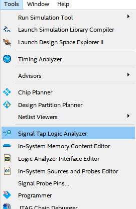２．観測信号の選択
Signal Tap内のDouble-click to add nodesをダブルクリックするとNode Finderが表示される。
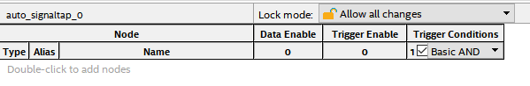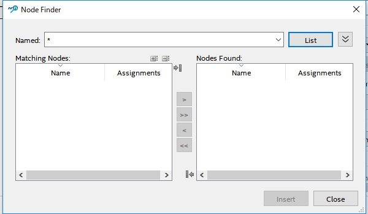
Node FinderのOptions(を押すと出てくる)をPins:outputに設定し、 Listを押し、Matching Nodes内の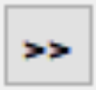のボタンを押すと、次のようになる。
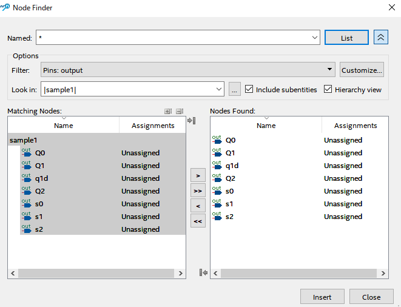３．トリガー信号・トリガー条件の設定
(a)トリガー信号の設定
トリガー信号はTrigger Enableの欄にチェックを入れる。
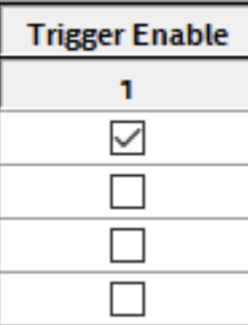(b)トリガー条件の設定
トリガー条件はTrigger Conditionsの欄を選択し、次の選択肢の中から選ぶ。
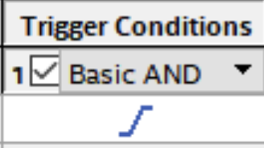 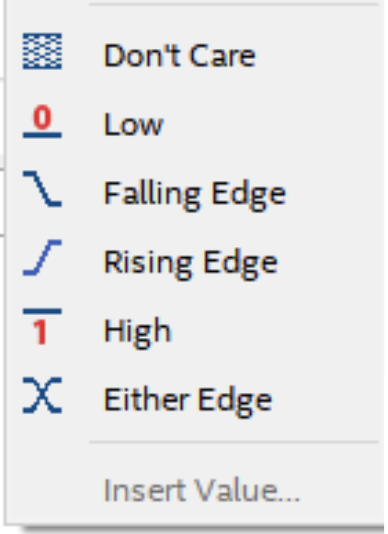４．Sampling Clockの設定
Sampling ClockをSignal Configuration内のClockで設定する。
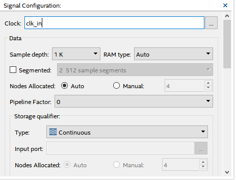５．Sample depthの設定
Signal Configuration内のDataのSample depthで設定する。
６．プロジェクトのコンパイル
コンパイルする前にSignal Tapのパスを設定する部分に作成したファイルを設定する。
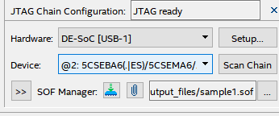
その後、Quartus Prime上の元にプロジェクトの画面に戻り、コンパイルを行う。
７．FPGAのコンフィグレーション(Signal Tapを含む)
コンパイルが終了したらロジックアナライザの画面に戻り、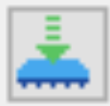を押し、コンフィグレーションを行う。
８．観測の開始と終了
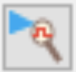を押すと観測が開始され、 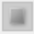のアイコンを押すと観測を終了する。
９．画面のズーム
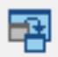を押すと画面がズームされる。もう一度押すと元に戻る。
１０．結果の保存
結果の保存はできないので波形を適切な観測範囲でスクリーンショット等で画像保存する。ファイル自体の保存は行える。
１１．Signal Tapの削除と再追加
観測終了後Signal Tapは閉じ、保存されないため、再度観測し直す際は再度追加し直す必要がある。
←back